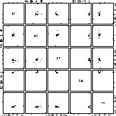

The purpose of the paper is two-fold: providing code for the grand tour that others could pick up and modify (it is not easy to code this version which is why there are very few implementations currently available), and secondly, provide a variety of training datasets to help new users get a visual sense for high-dimensional data.
Grand tour examples
Here are some examples of a grand tour running on data generated by placing points on the vertices of a 9-D cube. This is the primeval form of the grand tour, a la Asimov (1985). They are purely movies with fixed play speed and no user interaction.
1-D (as a sequence of histograms)
2-D (as a scatterplot)
3-D (as a parallel coordinate plot)
4-D (as a parallel coordinate plot)
5-D (as a parallel coordinate plot)
A Note: These are animated gifs, they run through the grand tour sequence once. They should show smooth changes to the image as the animation runs, but it may appear jerky and non-smooth over the net. To re-run it you need to reload.
These examples illustrate tours implemented using the algorithm in Buja, Cook, Asimov, Hurley (1997). They are geodesic tours that contain no "within-projection-plane" spin, which is optimal for viewing tours where d is less than p . This is the type of tour implemented in XGobi , with the main difference being that XGobi is capable of 2-D projections only.
Ways to view the data
If you have your web browser set up to recognize files with a .xgobi extension then you can simply click the XGobi button beside the data explanations below. (You'll need the latest version of XGobi, at least the Oct 1997 beta release for this to work correctly.)
If you have your web browser set up to recognize files with a .xli extension as XLispStat, then you can simply click the XLispStat button beside the data explanations below. This will start up a tour in XLispStat on the dataset.
Compile C code to compute arbitrary dimension projection vectors for composing a grand tour and display results in S/S-Plus.
| 5-D Standard Normal: Samples from a standard normal distribution in any dimension look like samples from a standard bivariate normal distribution. The familiar bulls-eye is visible in every projection seen. | Data file | .vgroups file | S Code for generating samples | XGobi | XLispStat | |
|---|---|---|
| 5-D same variance, correlation 0.5: Samples from a normal with equal variances, but correlation equal to 0.5 have both circular and elliptical contours. The appearance is elliptical in most views. | Data file | .vgroups file | S Code for generating samples | XGobi | XLispStat | |
| 5-D different variances, no correlation: Samples from a normal with different variances, but no correlation also look mostly elliptical but you see a shrinking-expanding effect in a tour that results from variables with small variables being toured in and then out again. | Data file | .vgroups file | S Code for generating samples | XGobi | XLispStat | |
| 5-D "singularity": First variable has almost zero variance compared to all the others. In some views the points will "collapse" into a very linear shape. | Data file | .vgroups file | S Code for generating samples | XGobi | XLispStat |
Note: Variables need to be scaled together (min/max over all measurements is used) in the viewing transformation so that variance difference are reflected. In XGobi, this is achieved by creating a file with the extension .vgroups with each row having a 1 in the the first place and nothing else on the line. The number of rows should match the number of variables. To maintain the scale differences in the latter two datasets we have used a trick: two points are added to the top of the data files which delimit the min/max values of the variables with the largest variances. These appear as two anomalous data points floating far from other points in the grand tour, visually distracting but they work to force XLispStat, and XGobi initiated from the web browser, to keep the variable scales relevant to each other.
|  | 5-D Standard Cauchy: Samples from a standard Cauchy distribution in any dimension look like a mass of points in one location and a few very extreme points. If you remove the extreme points and rescale it still looks like mass of points in one location and a few very extreme points | Data file | .vgroups file | S Code for generating samples | XGobi | XLispStat |
|---|---|---|
| 5-D t with 30 df: Similar to a normal sample but has a tighter center clustering and more outlying points. | Data file | .vgroups file | S Code for generating samples | XGobi | XLispStat |
| 5-D Standard Exponential: Samples from a standard Exponential distribution (lambda=1) in any dimension have most projections that exhibit skewness. In the pairwise plot the points mass at the (0,0) location in each plot. The grand tour views are more interesting: (1) it is clear that there is one point in 5-D that is a vertex where 5 edges merge, (2) in many projections (when all variables contribute to the projection in an averaging manner) the data look somewhat like a sample from a normal distribution. | Data file | .vgroups file | S Code for generating samples | XGobi | XLispStat |
|---|
| The vertices of a cube up to 9-D: This data is interesting because most projections from 9-D look quite normal, except for the regularities imposed by the cube grid. The pairs plot is quite different from the grand tour views. | Data file | S Code for generating samples | XGobi | XLispStat | |
|---|---|---|
| Uniform in a 5-D cube: Just looks like a box. | Data file | S Code for generating samples | XGobi | XLispStat | |
| | Uniform on a 5-D sphere: Always circular projections with sharp edges. Interesting to take watch a section tour of this data - it is always a circle. | Data file | S Code for generating samples | XGobi | XLispStat |
| Uniform within a 5-D sphere: Always circular projections but "fuzzy" edges. No circular sections. | Data file | S Code for generating samples | XGobi | XLispStat | |
| Three distinct unconnected clusters: The points follow 3 different motion patterns. | Data file | XGobi | XLispStat | |
| 1-D structure embedded in 5-D This data always looks almost linear (highly correlated) or occasionally reduces in variance to a very small blob. | Data file | XGobi | XLispStat | |
| 2-D structure embedded in 5-D This data always looks almost planar or linear (highly correlated) or occasionally reduces in variance to a very small blob. | Data file | XGobi | XLispStat | |
| 1-D non-linear structure embedded in 5-D This data always looks like a curved line rotating. | Data file | XGobi | XLispStat |
| How many clusters in this data set? | Data 1 (XGobi, XLispStat)| Data 2 (XGobi, XLispStat) | Data 3 (XGobi, XLispStat) | Data 4 (XGobi, XLispStat) | Answers |
|---|---|---|
| What is the distribution? | Data 1 (XGobi, XLispStat) | Data 2 (XGobi, XLispStat) | Data 3 (XGobi, XLispStat) | Data 4 (XGobi, XLispStat) | Answers |
Thanks to Dr Sigbert Klinke for valuable feedback on the material in this paper.
The author was supported by National Science Foundation grants DMS9632662 and DMS9214497.
Asimov, D. (1985) The Grand Tour: A Tool for Viewing Multidimensional Data, SIAM Journal of Scientific and Statistical Computing, 6(1):128-143.
Buja, A., Cook, D., Asimov, D., Hurley, C. (1997) Dynamic Projections in High-Dimensional Visualization: Theory and Computational Methods, Journal of Computational and Graphical Statistics, submitted.
Carr, D. B. and Wegman, E. J. and Luo, Q. (1996) ExplorN: Design Considerations Past and Present, Technical Report No. 129, Center for Computational Statistics, George Mason University .
Swayne, D. F., Cook, D., Buja, A. (1997) XGobi: Interactive Dynamic Graphics in the X Window System, Journal of Computational and Graphical Statistics, forthcoming.
Tierney, L. (1991), LispStat: An Object-Orientated Environment for Statistical Computing and Dynamic Graphics, Wiley, New York, NY.